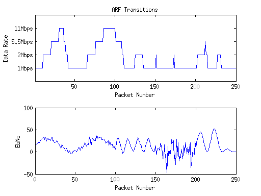

Contents
Called Functions
% ECE408: Wireless Communications % Implementation of PHY layer of IEEE802.11b % % Rappaport, Elliot D % Weintraub, Elie % Weintraub, Hillel % % IEEE80211b_ARF.m: Implements IEEE802.11b using ARF and a changing EbNo. clear all,close all; tic
Simulation Parameters
make some fun EbNo's to simulate chnaging environment and see how ARF adjusts
EbNo1 = 15*(1+sin([1:100]/10)) + 3*randn(1, 100);% range of noise levels EbNo2 = 15*(1+sin([1:50]/2)) + 2*randn(1, 50); EbNo3 = 20*randn(1, 50); EbNo4 = abs(15*(1+sin([1:50]/10)).*(1+sin([1:50]/3))); EbNo = [EbNo1 EbNo2 EbNo3 EbNo4]; NumPackets = length(EbNo); % number of packets sent PacketSizeBits = 8192; % 802.11 packet size SamplesPerChip = 8;
ARF Parameters
ERR_THRESH = PacketSizeBits/500; % num errors above which packet is bad SUCCESS_THRESH = 10; % num of good pkts needed to transition RateMat=zeros(NumPackets,1);
Setup
modulateFunctions = {@(x) barkermod(x, 1), @(x) barkermod(x, 2),...
@(x) cckmod(x, 4), @(x) cckmod(x, 8)};
demodulateFunctions = {@(x,y) barkerdemod(x, 1), @(x,y) barkerdemod(x, 2),...
@(x,y) CCKdemod(x, 4, y), @(x,y) CCKdemod(x, 8, y)};
BitsPerSymbols = [1, 2, 4, 8];
SpreadingRates = [11, 11, 8, 8];
DataRates = [1, 2, 5.5, 11];
calcSnr = @(rate,EbNo) EbNo +10*log10(BitsPerSymbols(rate))...
-10*log10(SpreadingRates(rate)*SamplesPerChip);
Main Loop
%Initialize Stats rate = 1; TotalBits = 0; ErrorBits = 0; numSuccess = 0; numFail = 0; probe = false; for packet = 1:NumPackets %disp(['Simulating Packet ' num2str(packet) '...']); snr = calcSnr(rate,EbNo(packet)); %EbNo always changing %Transmitter TxBits = randi([0 1],PacketSizeBits,1); TxChips = modulateFunctions{rate}(TxBits); [Samples,h,FilterDelayInChips] = TxFilter(TxChips,SamplesPerChip); ChannelOutput = awgn(Samples, snr, 'measured'); %Receiver [RxChips,TotalDelayInBits] = RxFilter(ChannelOutput,h,... SamplesPerChip,FilterDelayInChips,... BitsPerSymbols(rate),SpreadingRates(rate)); RxBits = demodulateFunctions{rate}(RxChips, TotalDelayInBits); %Calculate error TotalBits = TotalBits+length(RxBits)-TotalDelayInBits; NewErrorBits = sum(TxBits(1:end-TotalDelayInBits)~=... RxBits(TotalDelayInBits+1:end)); ErrorBits = ErrorBits + NewErrorBits; %Adjust ARF parameters (numSuccess, numFail, pilot, rate) RateMat(packet)=rate; if NewErrorBits > ERR_THRESH % failure numFail = numFail+1; if (numFail == 2 || (numFail == 1 && probe)) && rate > 1 rate = rate-1; numSuccess = 0; numFail = 0;probe = false; end else % success numSuccess = numSuccess+1; if numSuccess == SUCCESS_THRESH && rate < 4 rate = rate+1; numSuccess = 0; numFail = 0; probe = true; else probe = false; numFail = 0; end end end
Plot ARF transitions
h = figure('Name','ARF Transitions'); hold on; subplot(211); plot(1:NumPackets,RateMat); xlabel('Packet Number');ylabel('Data Rate'); xlim([1 NumPackets]);ylim([0 5]);title('ARF Transitions'); set(gca,'yTickLabel',{'', '1Mbps','2Mbps','5.5Mbps','11Mbps', ''}); subplot(212); plot(1:NumPackets, EbNo); xlabel('Packet Number');ylabel('EbNo'); % saveas(h, 'Transitions.fig'); % saveas(h, 'Transitions.png'); toc
Elapsed time is 886.554516 seconds.